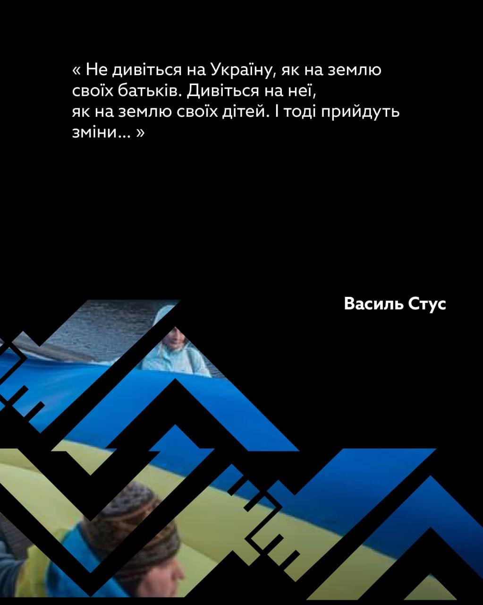
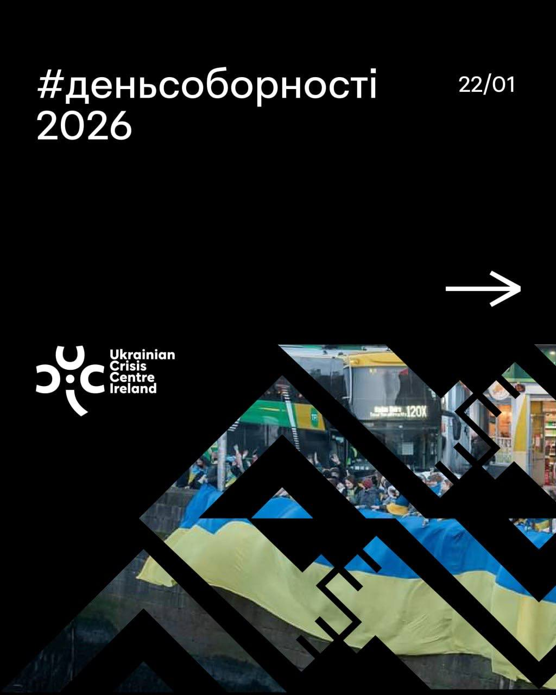
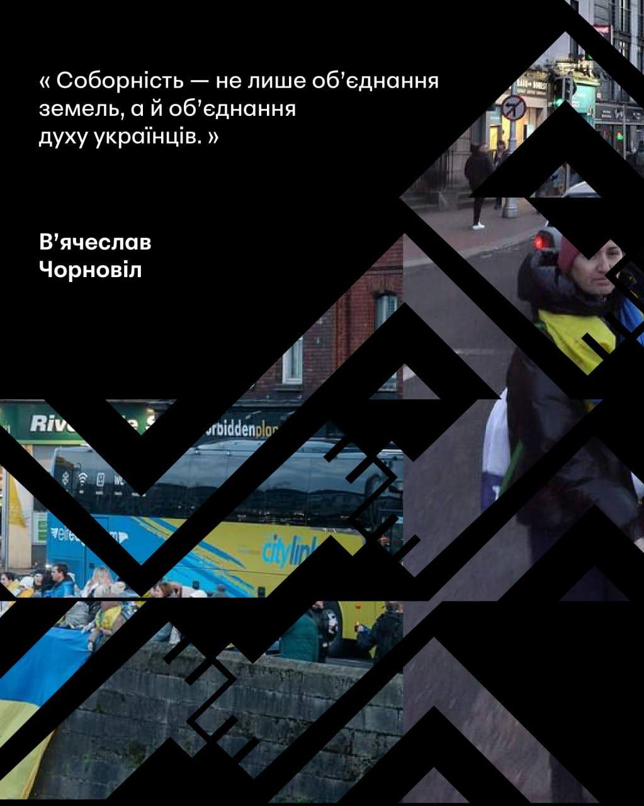
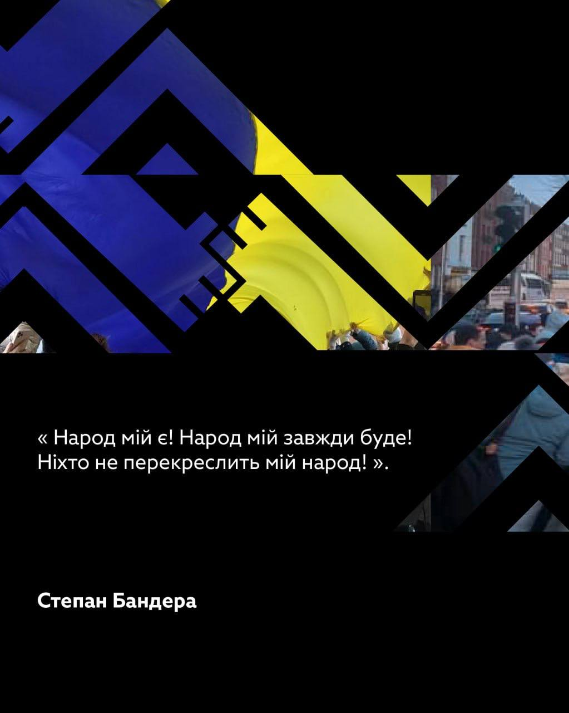
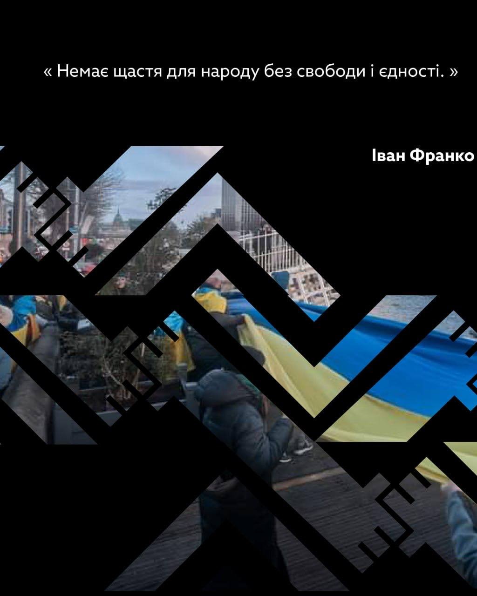
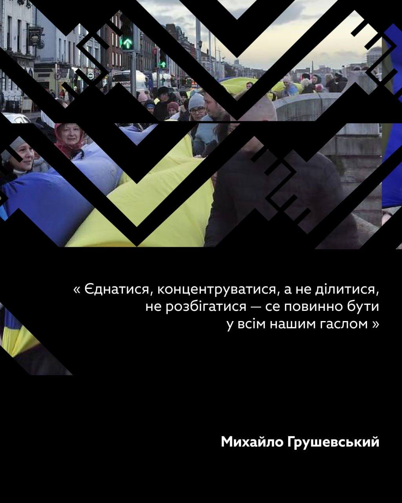
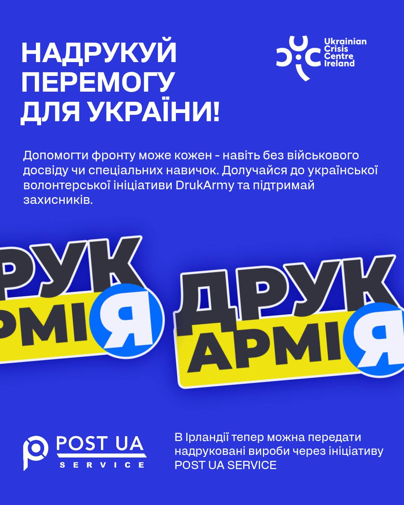

24 лютого 2022 року — дата, що назавжди розколола життя мільйонів українців на «до» та «після». Вона змінила не лише наші долі, вона змінила весь світ. Понад чотири роки триває повномасштабна війна, чотири роки болю, втрат і зруйнованих доль. Найстрашніший удар припав на дітей: понад 1,7 мільйона маленьких українців стали біженцями, тисячі загинули або були примусово депортовані. За кожною цифрою стоїть дитина, чиє дитинство вкрала росія.
Для багатьох українців, які опинилися за кордоном, перші місяці стали часом розпачу та пошуку даху над головою. Проте, ледь оправившись від шоку, українська громада перетворила свій біль на дію. Сьогодні ми бачимо неймовірне явище: люди, які втратили все, знаходять у собі сили допомагати рідній країні і словом, і ділом, і коштами.



Голос, який не стихає
Ми не маємо права на втому, доки світ не звикне до статистики війни. Саме тому українці в усьому світі продовжують виходити на площі. В Ірландії, яка з першого дня щиро й відкрито стала пліч-о-пліч із нами, ці акції стали символом незламності. Щотижня ірландські активісти разом із нашою громадою приходять до російського посольства в Дубліні. Вони стоять там, щоб нагадати: на руках агресора — кров, і ми не дозволимо світу мовчати про ці злочини.



Від волонтерства до технологій: ДрукАрмія
Допомога Україні сьогодні — це не лише мітинги, а й конкретні справи, що рятують життя. Одним із найбільш захопливих прикладів є ініціатива «ДрукАрмія» (DrukArmy). Це цифрова платформа, яка об’єднує власників 3D-принтерів по всьому світу для виготовлення критично необхідних виробів для фронту.
Це доступно кожному: навіть не маючи військового досвіду, звичайний бухгалтер, студент чи пенсіонер може перетворити пластик на реальну допомогу. Принтер вартістю близько 150 євро та бажання допомогти — це все, що потрібно, аби ваші вироби опинилися в руках захисників на передовій. В Ірландії логістика вже налагоджена: передати надруковані деталі можна через ініціативу Post UA або принести безпосередньо до офісу UCCI в Дубліні.

Сила солідарності
Життя в еміграції — це щоденна боротьба з виснаженням, проте власна втома відступає перед подвигом тих, хто виборює нашу свободу в окопах або працює в тилу без світла й тепла. Численні благодійні організації та ініціативи, як-от Український Кризовий Центр в Ірландії, стають тими майданчиками, де кожен українець може відчути: ми не біженці без майбутнього, ми — потужна сила підтримки.
Ми пам’ятаємо кожного хлопчика, який не повернувся додому, і кожну дівчинку, чий голос більше не чують батьки. Саме заради них, заради правди і нашої спільної перемоги ми продовжуємо тримати свій фронт за кордоном. Наша єдність — це те, що робить нас непереможними.